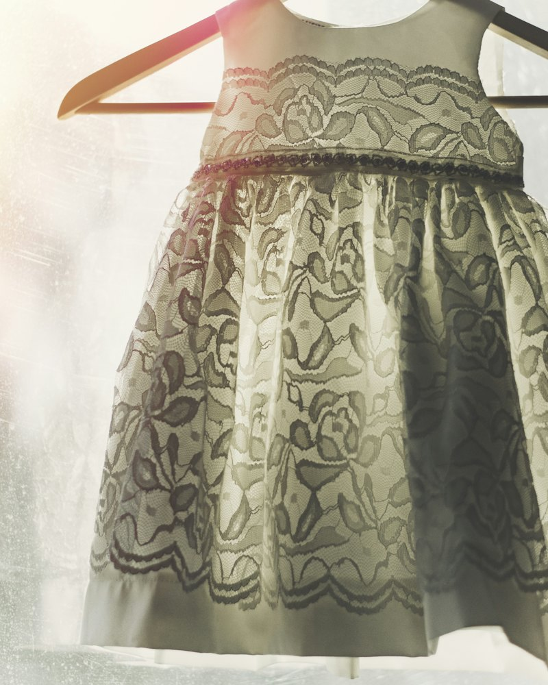
Moda · Šiviljstvo · Preobrazbe
Ulanni
Ljubljana D’OR
Lepo ostane.
Zgodba se nadaljuje.
Moda z dušo. Stvari z novo zgodbo.
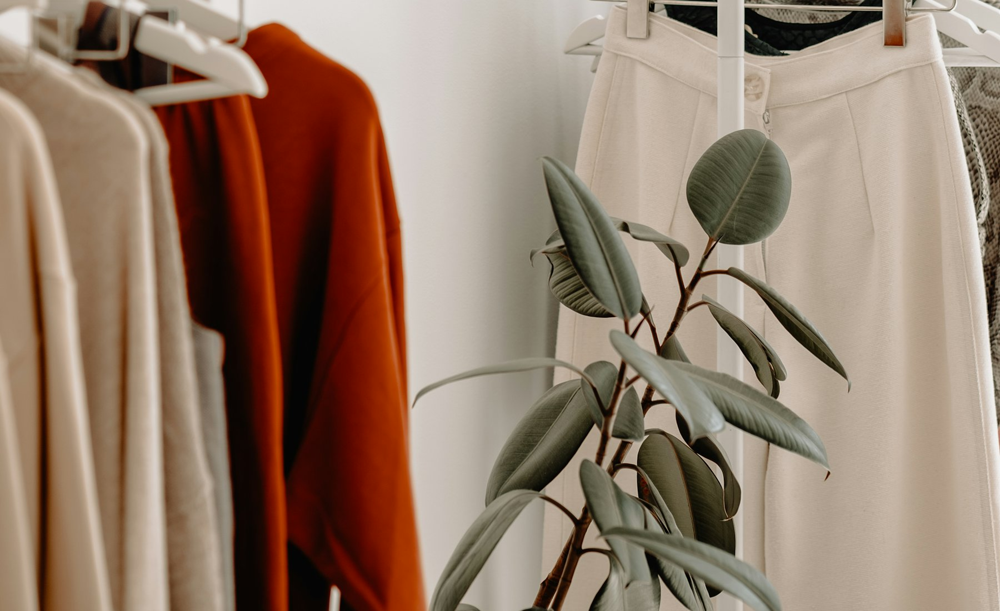
Dobrodošli
Lepota ni vedno nova.
Včasih jo je treba
samo znova odkriti.
ULANNI je svet mode, šiviljstva in osebnih preobrazb. Verjamemo, da imajo oblačila svojo zgodbo, da lepota ne potrebuje vedno novega in da se pravi slog začne pri človeku.
V našem svetu se srečajo skrbno izbrana oblačila, ustvarjalne predelave, šiviljske spretnosti in osebno svetovanje. Izbiramo drugače. Ustvarjamo drugače. Z mislijo na lepoto, trajnost in edinstvenost vsakega posameznika.
ULANNI — lepo ostane. Zgodba se nadaljuje.
Svet ULANNI
Več kot moda
Prostor za lepoto, ustvarjalnost in nove začetke.
Boutique
Moda, ki ima svojo zgodbo
Včasih je najlepši kos garderobe tisti, ki je že doživel svojo zgodbo. V ULANNI izbiramo oblačila in modne dodatke, ki si zaslužijo novo priložnost.
- Vintage in retro oblačila
- Skrbno izbrana second-hand oblačila
- Plašči, jakne, hlače in obleke
- Torbice, čevlji in modni dodatki
- Posebni sezonski izbori
- Kosi, predelani v ateljeju ULANNI
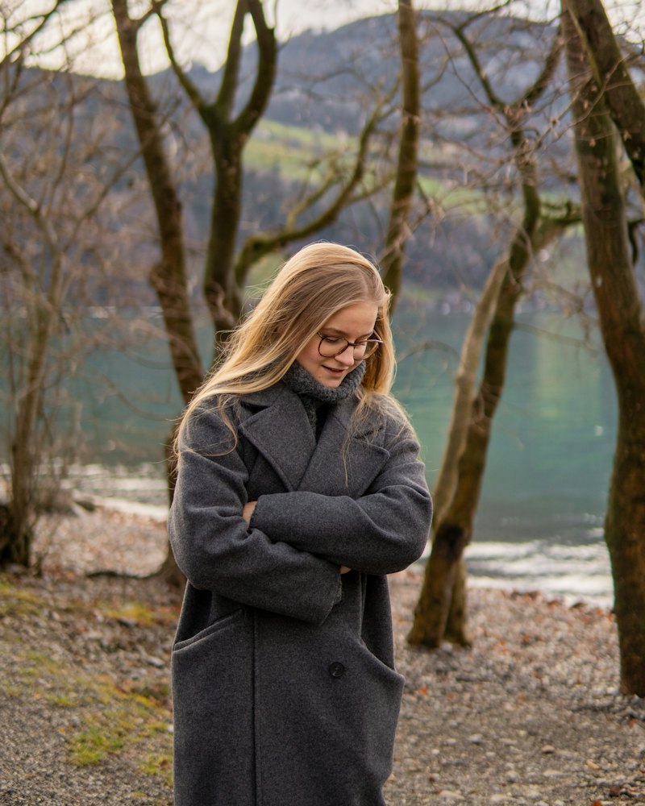
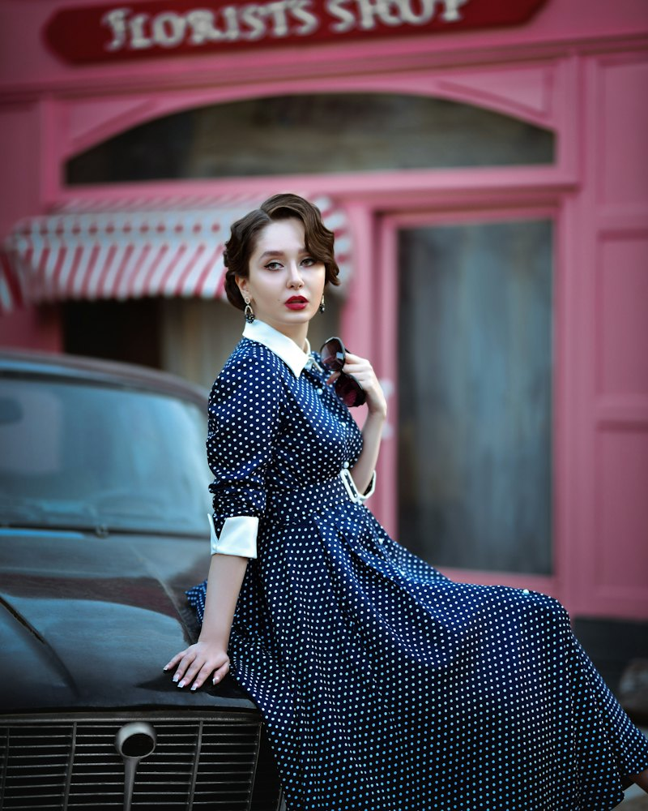
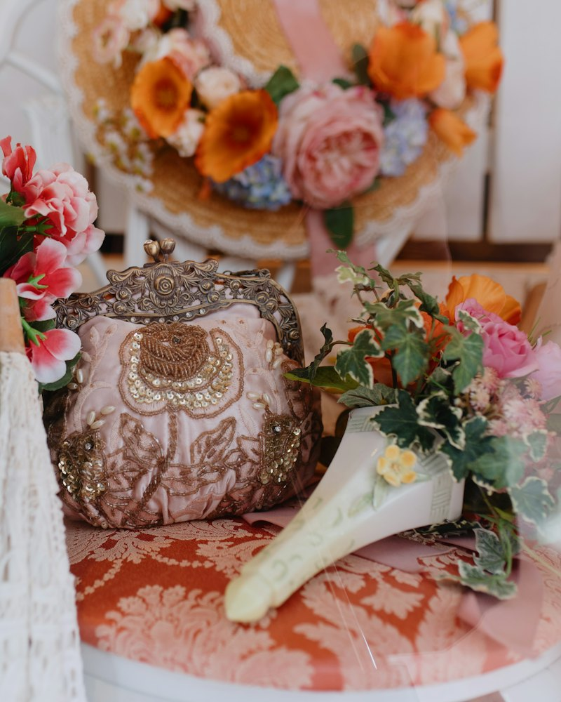
Prikazani kosi so vzorčni primeri postavitve, ne dejanska zaloga. Vsak kos bo imel svojo fotografijo, velikost, stanje, ceno in podatek o razpoložljivosti. Za začetek deluje kot katalog s povpraševanjem; spletni nakup lahko dodamo pozneje.
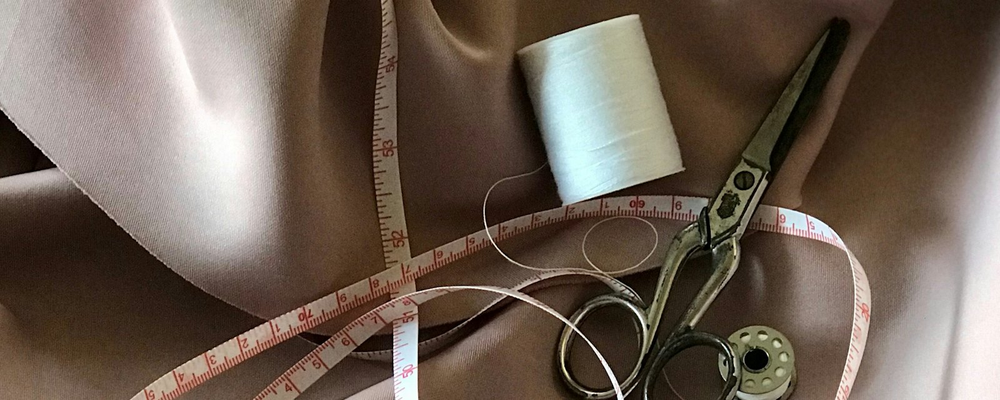
Šiviljski atelje
Ker si zaslužiš, da ti oblačilo lepo pristaja
Vsako oblačilo lahko dobi novo življenje. V šiviljskem ateljeju ULANNI združujemo natančnost, spretnost in občutek za estetiko.
Storitve
- Krajšanje in podaljševanje oblačil
- Ožanje in prilagajanje postavi
- Popravila zadrg in šivov
- Predelave in osvežitve oblačil
- Ustvarjalno preoblikovanje starih kosov
- Izbrana šiviljska dela po dogovoru
Kako poteka
-
Prinesi kos
Pokaži nam oblačilo in povej, kaj si želiš spremeniti.
-
Skupaj izberemo rešitev
Pomerimo, označimo in se dogovorimo za ceno in rok.
-
Nosi ga znova
Ob prevzemu pomeriš in tvoja zgodba se nadaljuje.
Stil in preobrazbe
Bodi svoj metulj
Celostna preobrazba, ki te spomni, kdo si.
Pravi slog ni v tem, da sledimo vsem modnim pravilom. Pravi slog je, da odkrijemo, kaj poudari našo osebnost, lepoto in samozavest.
Nova podoba sama ni dovolj. Naučiti se je treba, kako ti pristajajo barva, kroj in model ter kakšen tip si. Šele takrat svojo podobo res nosiš kot svojo.
- Analiza barvnega tipa
- Svetovanje glede krojev in postave
- Oblikovanje osebnega sloga
- Urejanje garderobe in kapsulne kolekcije
- Pomoč pri nakupovanju
- Make-up, pričeska in celostna preobrazba
- Fotografiranje končne podobe
- Svetovanje na daljavo, prek videoklica
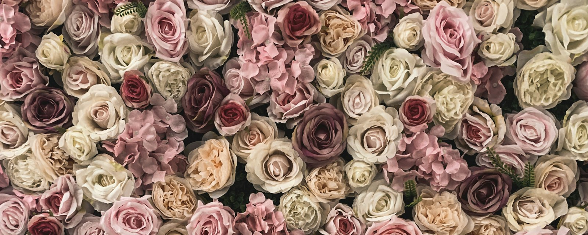
Foto kotiček
Cvetlična stena pred trgovino
Vsaka preobrazba si zasluži fotografijo. Pred trgovino in na steni ateljeja raste cvetlični kotiček — prostor, kjer se nova podoba fotografira in kjer se ULANNI pokaže mimoidočim.
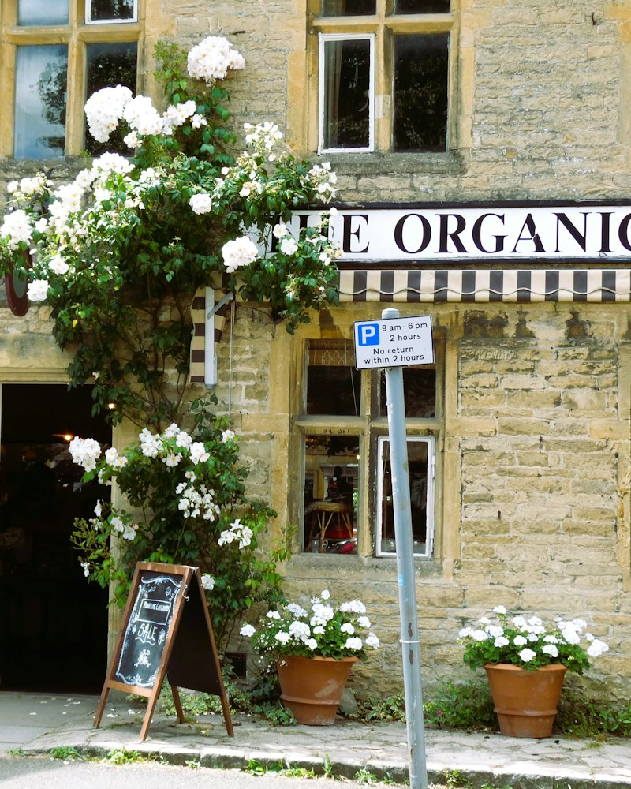
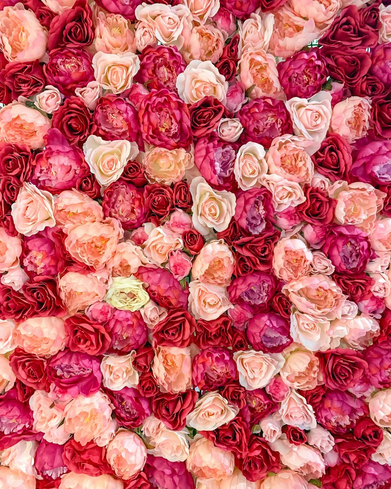
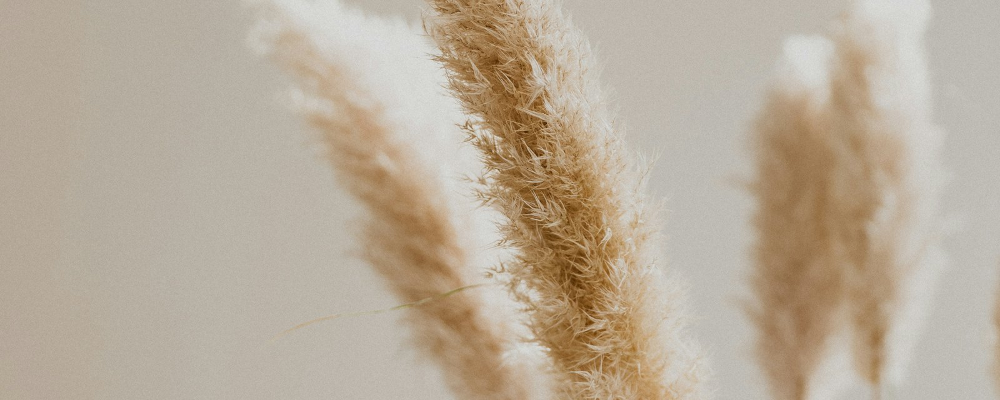
Kotiček se menja s sezono. Spomladi vrtnice in potonike, poleti bela in puder roza, jeseni suho cvetje in trave.
Cvetlična stena je v pripravi. Fotografije prikazujejo želeno vzdušje, ne končnega kotička.
Ustvarjalnica
Ustvari. Preoblikuj. Zaživi.
Znanje je najlepše darilo, ki ga lahko podarimo sami sebi. V ustvarjalnici ULANNI se učimo šivanja, predelovanja oblačil in ustvarjalne ponovne uporabe — v živo, v ateljeju.
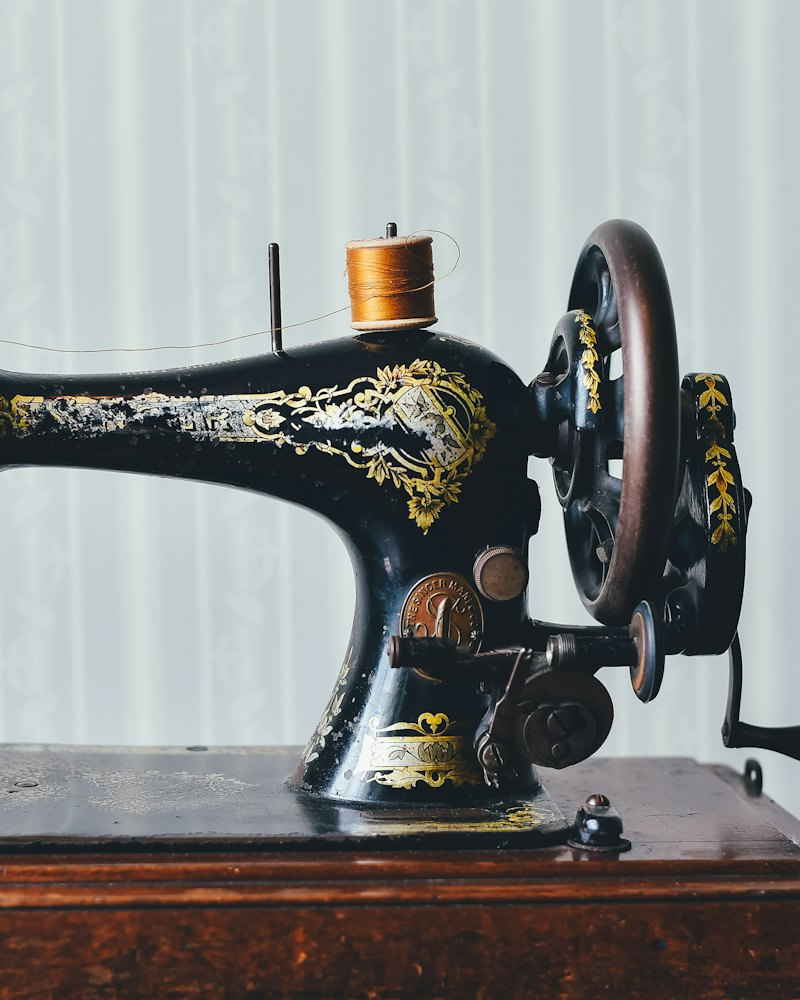
Začetni tečaj šivanja
Osnove dela s šivalnim strojem, prvi šivi in prvi izdelek, ki ga odneseš domov.
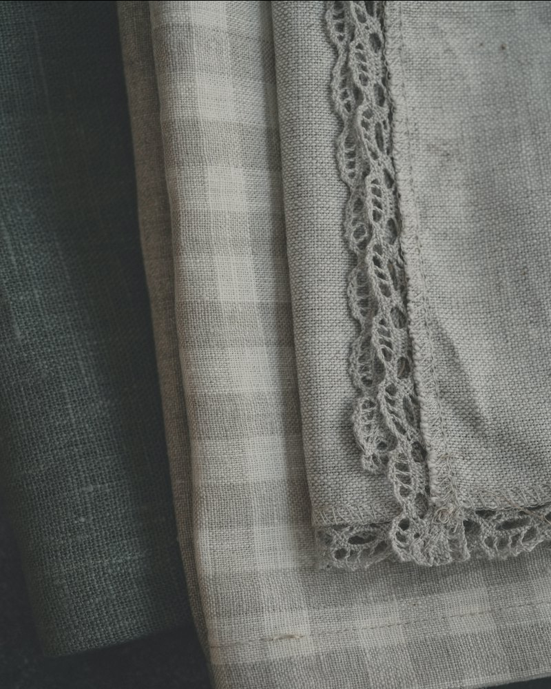
Nadaljevalni tečaj
Kroji, prilagoditve po meri in zahtevnejši šivi za tiste, ki že znajo osnove.
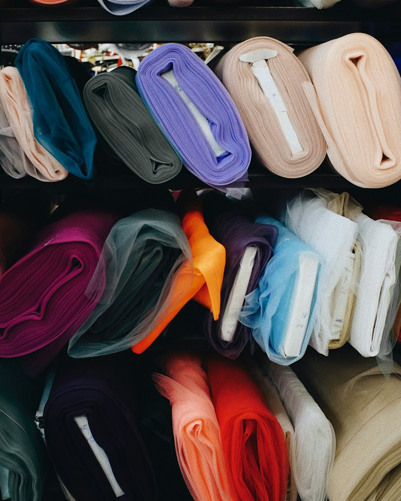
Predelava in prenova
Ustvarjalne delavnice, kjer iz pozabljenega kosa nastane nekaj novega.
Spletna učilnica
Nauči se nositi svojo podobo
Celostna preobrazba videza sama po sebi ni dovolj. Treba se je naučiti, kako ti pristaja barva, kakšen kroj in model te poudari in kakšen tip si.
Zato ULANNI pripravlja spletno učilnico: šivanje, barve, kroji in slog — doma, v svojem ritmu, s koraki iz ateljeja.
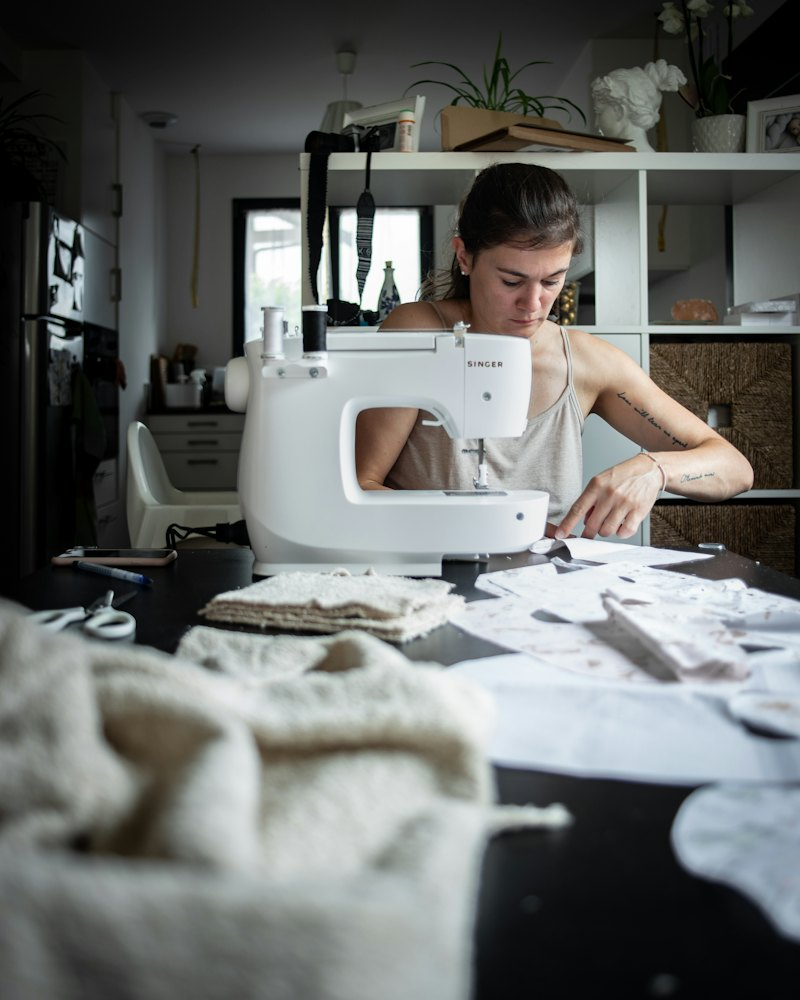
Tečaji šivanja
Šivalni stroj in osnovni šivi, krajšanje, menjava zadrge, kroji in upcycling.
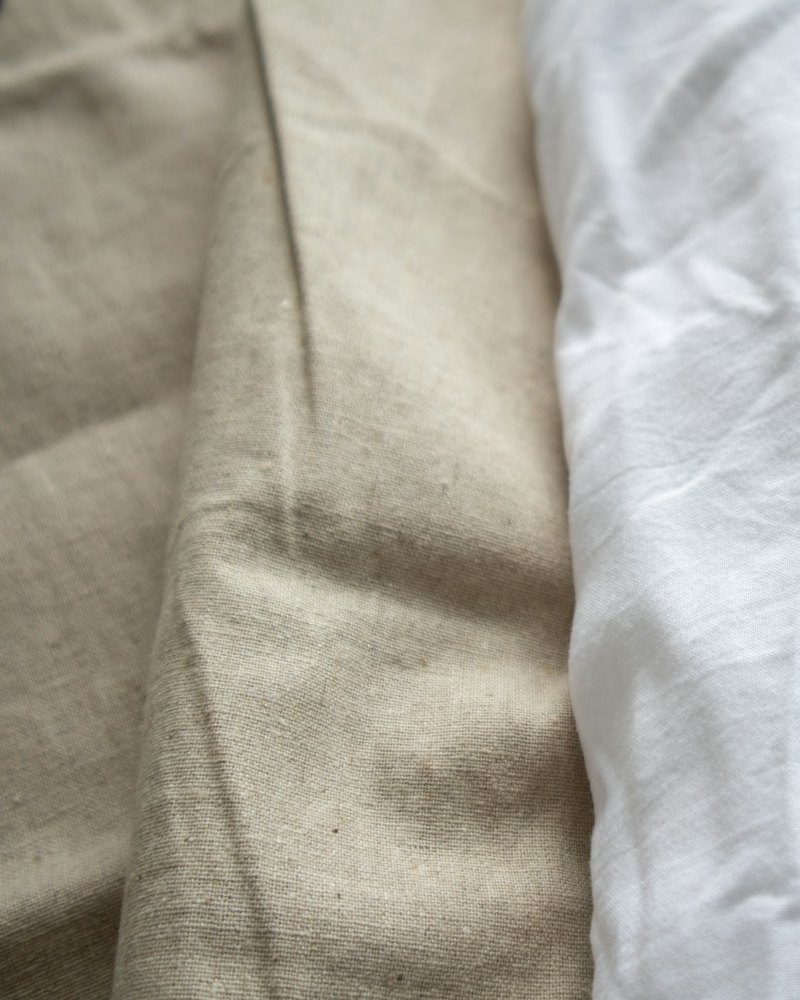
Spoznaj svoj slog
Barve, ki te poživijo, postava in linije, kroji in modeli, kakšen tip si.
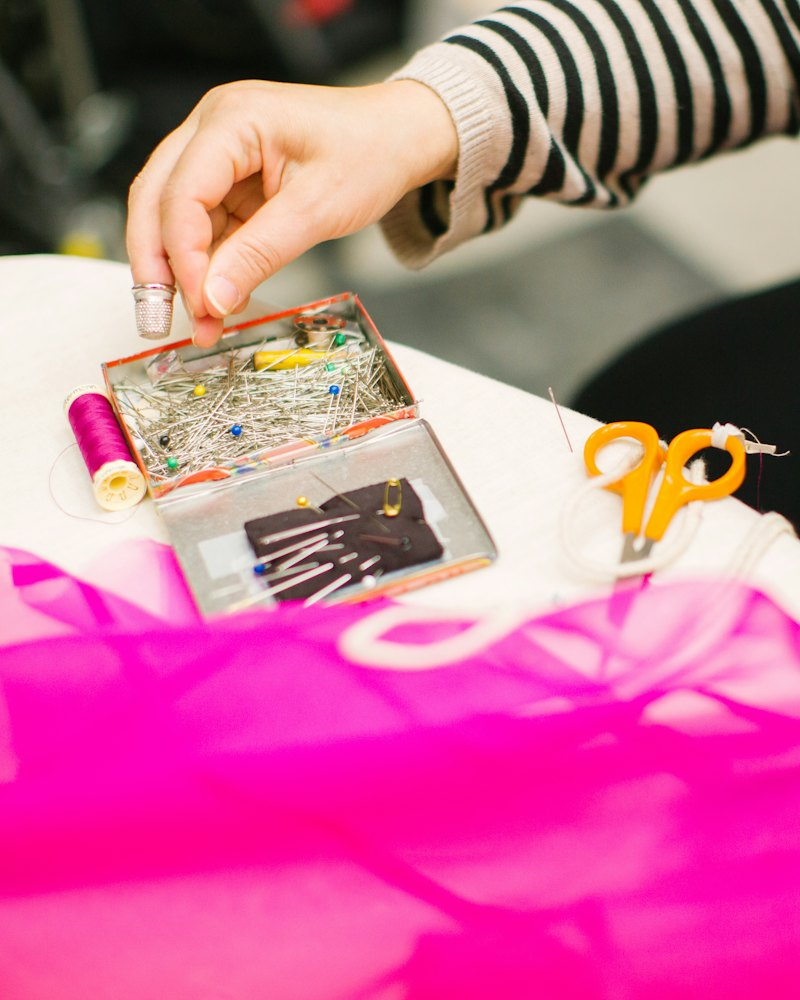
Izobraževanje za stilista
Barvna analiza in proporci, pogovor s stranko, garderoba in nakupovanje iz druge roke.
Svetovanje na daljavo
Osebni posvet prek videoklica: pregled garderobe, tvoje barve, načrt naslednjih korakov.
Spletna učilnica se odpira v naslednji fazi. Cene in datumi še niso določeni; obiskovalci se bodo lahko prijavili na obvestilo.
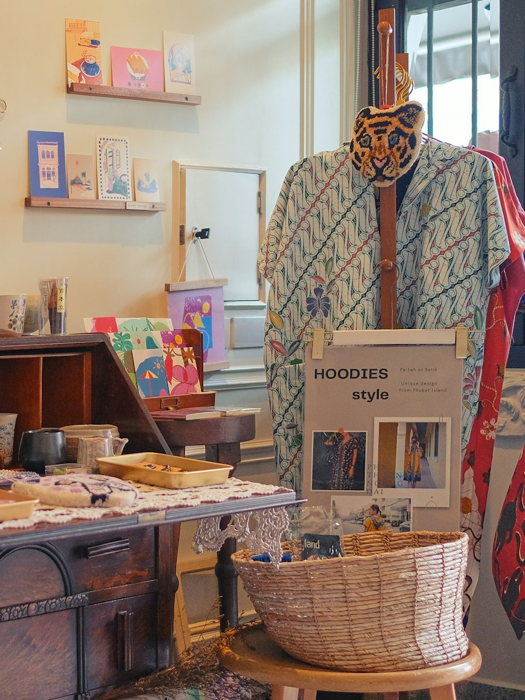
O ULANNI
Zgodba ULANNI se začne pri ustvarjanju
ULANNI je nastal iz ljubezni do mode, ustvarjanja in prepričanja, da ima lepota več kot eno življenje.
Za znamko stoji ustvarjalka, ki združuje znanje oblikovanja oblačil, šiviljske spretnosti, izkušnje z modo in občutek za osebno preobrazbo.
ULANNI je prostor, kjer se srečujejo preteklost, sedanjost in prihodnost. Kjer oblačila dobijo novo priložnost in ljudje nov pogled nase.
Ne gre le za oblačila. Gre za odnos do sebe, do ustvarjanja in do sveta, v katerem živimo.
ULANNI — lepo ostane. Zgodba se nadaljuje.
Uredniška rubrika
Ljubljana D’OR
Zlata nit lepote, mode in zgodb.
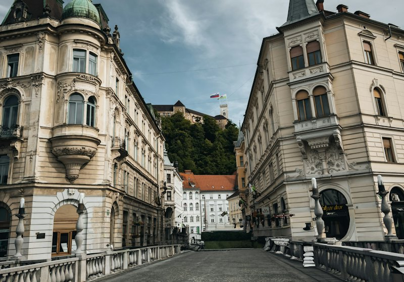
Mesto
Ljubljanske zgodbe in posebni kotički
Kraji, mimo katerih hodimo vsak dan, in zgodbe, ki jih redko slišimo.
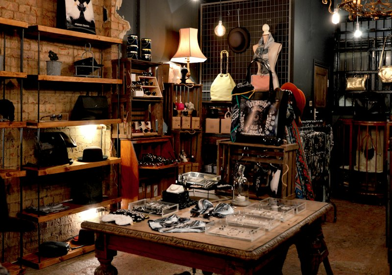
Moda
Moda nekoč in danes
Kaj so nosile Ljubljančanke pred sto leti in kaj od tega še vedno deluje.
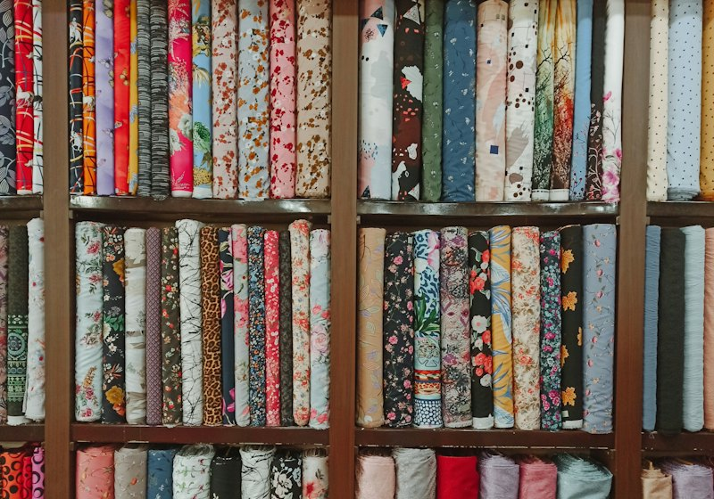
Ljudje
Ustvarjalci in rokodelci
Obrti, ki ostajajo, in ženske z navdihujočimi zgodbami.
V rubriki bodo tudi vintage kultura in estetika, dogodki, fotografije in ustvarjalni projekti ULANNI. Ljubljana D’OR je podpis znamke — ljubljanska identiteta, ki ULANNI doda zgodbo.
Cenik
Jasne cene
Šiviljske storitve
- Krajšanje hlač ali krila11,50 €
- Krajšanje z originalnim robom15,00 €
- Elegantne hlače ali krilo17,00 €
- Menjava zadrge14,00 €
- Popravila in prilagoditveod 13,00 €
- Prešivanjeod 12,00 €
Stil in preobrazbe
- Stilsko svetovanje (1 h)od 180,00 €
- Stilska preobrazbaod 180,00 €
- Celostna preobrazba
frizura, stil, fotografije299,00 €
Boutique in tečaji
- Oblačila z zgodbood 3,00 €
- Posebni kosiod 10,00 €
- Upcycling, nova podobaod 15,00 €
- Začetni tečaj šivanja120,00 €
- Nadaljevalni tečaj120,00 €
- Kreativne delavniceod 25,00 €
Cene so prenesene iz obstoječega predloga in jih je treba pred objavo potrditi. Cene spletne učilnice še niso določene.
Kontakt
Obišči nas. Spoznaj svet ULANNI.
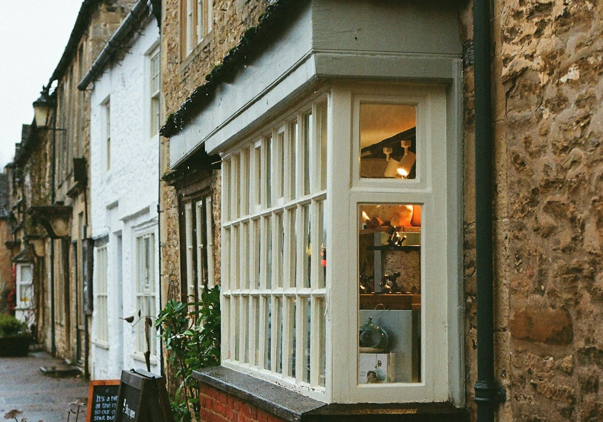
- Naslov
- Bežigrad 6, Ljubljana
Odpri zemljevid - Telefon
- 069 304 944
- E-pošta
- Dodamo v končni različici.
- Odpiralni čas
- Objavimo pred odprtjem.
- Instagram in Facebook
- Povezavi dodamo, ko profila potrdiva.
Pred objavo je treba potrditi naslov, telefon, e-pošto, odpiralni čas in povezave do aktivnih družbenih profilov.